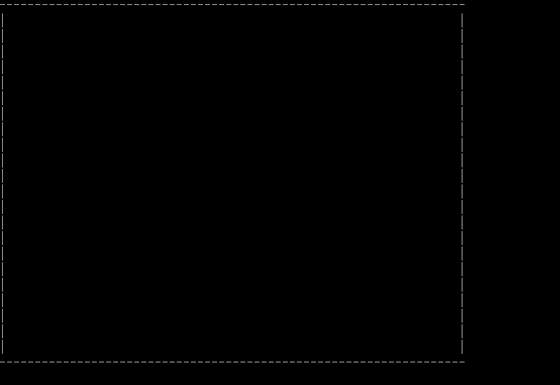
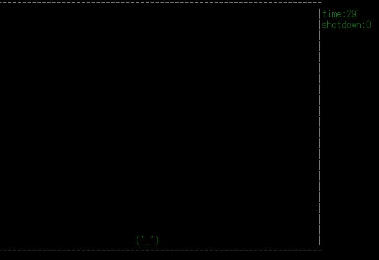
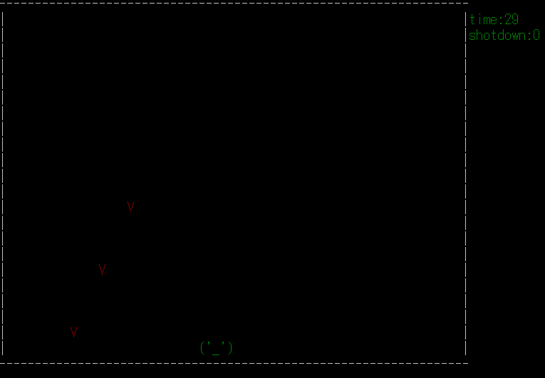
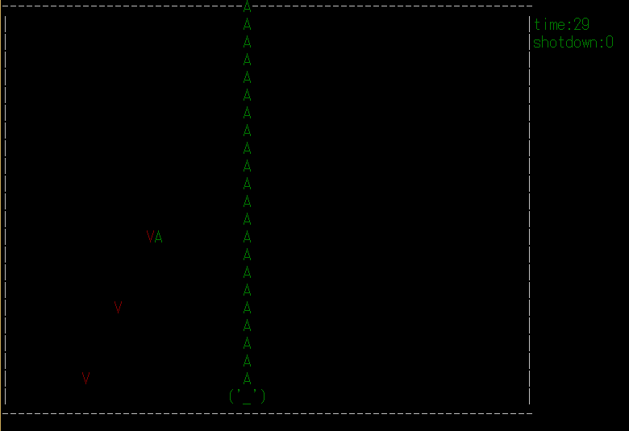
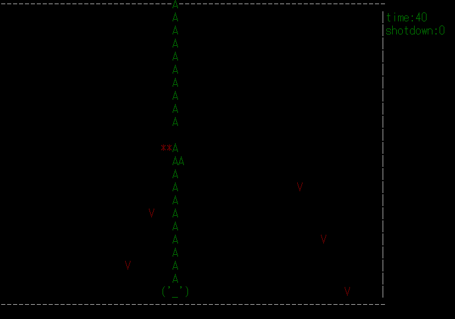
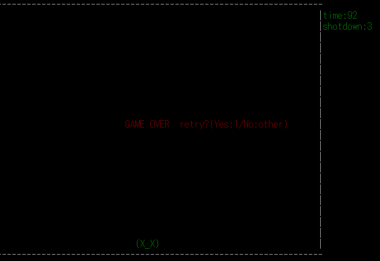
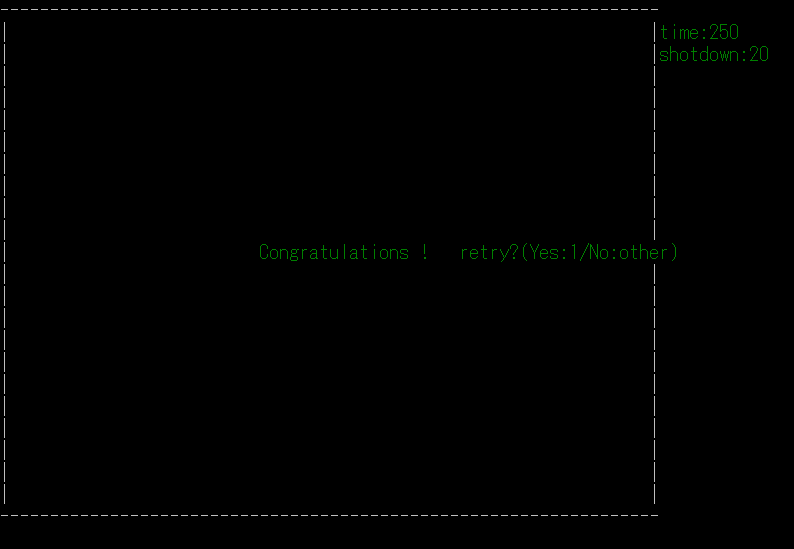

曾 醒基
今回はシューティングゲームを挑戦してみました。画面はコンソールで構成されていて、今はまだ簡単ですが、もう基本的な機能は揃っていますので、時間を掛ければ、色々追加できます。それでは、処理の流れを紹介していきます。
今回作ったプログラムでは、ゲーム全体の処理を巨大なループで置いていて、一回のループを1フレームとしています。基本的には1フレームの中で、背景、敵の弾、自機、自機の弾、敵という順場で文字を出力し、画面を更新します。
フレームごとに、前のフレームの画面の消去を兼ねて、最初は背景を描画します。
次に、プレーヤーを描画する。
その次に、弾の被弾判定を行い、弾描画する。被弾判定については後で説明します。
若干変な弾も出てきて、まだ修正する必要があります。
敵の爆発効果もあります。
プレーヤーが被弾したらゲームオーバーで、リトライ事もできます。
20機撃破したら、クリア画面が出てきます。
1フレームの中で、弾、敵、プレーヤーなど各種の独立な要素が存在しています。一つの弾が、誰かを当てているかどうかを判断するとき、すべての弾とキャラクター（自機、敵）の属性（HP、positionなど）を調べる必要があります。なので、要素を分けて管理する必要があります。今回ではC++の動的配列クラスstd::vectorを使って要素の管理を実現しました。
普通の配列と同じものだと思えいいです。ただ、配列の長さが事前に定める必要がなく、処理の流れと共に、長さを増やすことができます。
配列の宣言：vector ＜int＞ x = int x[10]
要素の追加：x.pushback(int a) 配列の一番最後に要素aを追加します。
配列の長さの獲得：x.size() ループなどでよく使われる
まずは要素を表す構造体を定義します。弾を例にするとこんな感じです
構造体bulletのvector作ります。pはプレーヤーと言う意味です。
弾のパターンの宣言し、初期化します。ここはbulletAとする
bulletmanage_pやbulletAにより、弾の管理は可能、例えば、Aパターンの弾を発射：
bulletmanage_pを通じて各弾の属性を調べれば、いろいろな判断もできます。
今回作ったプログラムは要素の出現や消失を管理するために、全要素に初期HP 3を与えています。フレームごとに全部の弾に対して被弾判定を行います。弾が当たったら、弾も当たられたキャラクターもHPが10引かれて、次のフレームに消えていきます。今回使う当たる標準は簡単で、弾とキャラクターのポジションが一致すれば当たると判定する。
今回勉強になったこと：